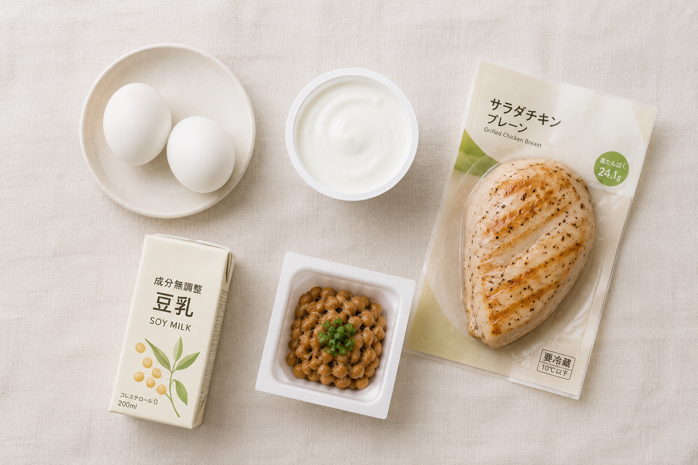

CONVENIENCE
コンビニでも、
20gは足りる。
式の準備が重なると自炊する余裕はなくなります。コンビニで済ませる日があっても構いませんが、選び方を間違えると肌と髪から落ちます。

先に結論です。1食20gが目安。サラダチキン1つで届きます。逆に「おにぎり＋サラダ」の組み合わせでは5g程度しかありません。この差が3ヶ月続くと、写真に出ます。
商品ごとのたんぱく質量
| 商品 | 目安量 | たんぱく質 |
|---|---|---|
| サラダチキン | 1個 | 約20〜25g |
| ゆで卵 | 2個 | 約12g |
| ギリシャヨーグルト | 1個 | 約10g |
| 納豆 | 1パック | 約8g |
| 豆乳 | 200ml | 約7g |
| チーズ | 1個 | 約4g |
| 焼き鳥（もも・塩） | 2本 | 約14g |
| サバの塩焼き（惣菜） | 1切れ | 約18g |
| おにぎり（鮭） | 1個 | 約4g |
| カットサラダ | 1袋 | 約1〜2g |
数字は商品によって変わります。パッケージの栄養成分表示で確認してください。
20gに届く組み合わせ
- サラダチキン1つ。これだけで足ります。物足りなければおにぎりを足す
- ゆで卵2個＋ギリシャヨーグルト。調理不要で22g。朝に向いています
- 焼き鳥2本＋納豆＋豆乳。29g。夜に食べるならこの構成
- サバの塩焼き＋卵1個。24g。魚の惣菜がある店舗なら
やってはいけない組み合わせ
おにぎりとカットサラダ。これが最もよくある選択で、そして最も足りません。合わせて6g程度です。「野菜を食べているから健康的」と考えてしまいますが、野菜にたんぱく質はほとんど入っていません。
パスタやうどん単品も同じです。体重は落ちますが、落ちているのは筋肉と水分で、顔から痩せます。
次に読む